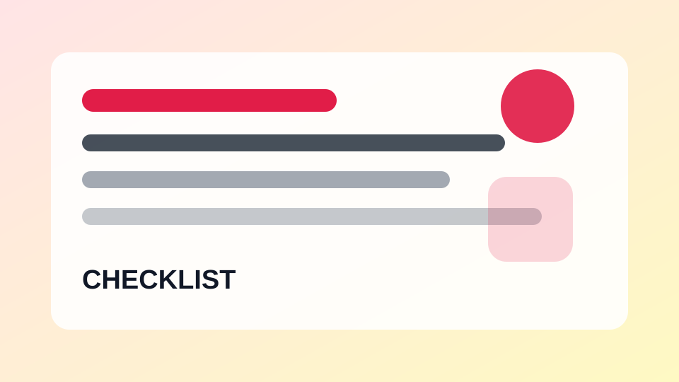

생활 체크리스트한 달에 한 번 하면 좋은 디지털 정리 체크리스트
알림, 저장공간, 계정 보안을 정기적으로 점검합니다.
스마트폰, 앱 설정, 계정 보안, 백업과 생활 체크리스트를 쉽게 정리하는 디지털 생활 가이드
디지털 생활과 일상 관리를 위한 확인 목록을 제공합니다.

생활 체크리스트알림, 저장공간, 계정 보안을 정기적으로 점검합니다.
배송지, 결제 금액, 판매자 정보를 확인하는 습관입니다.
충전기, 지도, 예약 내역, 보안 설정을 미리 준비합니다.
글자 크기, 보안, 스팸 차단, 사진 백업을 확인합니다.
인터넷, 화상회의, 파일 공유 상태를 미리 확인합니다.
업데이트, 계정, 백업, 보안 설정을 순서대로 진행합니다.
중복 사진, 날짜별 폴더, 백업 위치를 정리합니다.
계정, 구독, 저장공간, 사진을 한 번에 점검합니다.